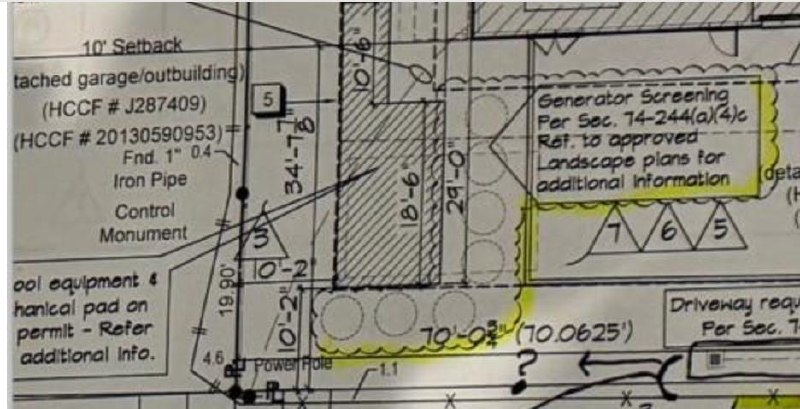

Approved Site Plan — Generator Screening Notation

Excerpt from approved permit/site drawings — 45 Stillforest Street
"Generator Screening Per Sec. 74-244(a)(4)c — Ref. to approved Landscape plans for additional information"
The approved drawings also note: "Pool equipment & mechanical pad on permit — Refer additional info." The electrical service and panel locations were separately confirmed on the updated pool plan submitted April 24, 2025 (see contractor statement below).
The Written Record
"I am pretty sure PPV has something in their ordinance regarding what needs to be put around a generator to screen it from view... 24(a) requires A/C and other equipment to be screened from view from the street."
"I told him that Piney Point has a rule that the utilities cannot be visible from the street and that various forms of screening are acceptable and should be indicated on the plans."
"We will need to provide screening for sure. I will make sure we adhere to the HOA and Piney Point requirements/guidelines."
"The plans reference a screen at front (facing west per PPV requirement) but not adjacent."
"Should a screen also be placed on the southwest side of the equipment pad?"
"Ask that he screen the generator on the SW corner as well... our approval is limited to only: ... 3. Approval of generator and screen."
"The Architectural plans were updated to reflect additional landscape screening for the Mechanical pad on the south side of the property."
In separate all-caps confirmation: "THE ARCHITECTURAL PLANS WERE CHANGED TO REFLECT A 'SHRUB' BASED SCREENING ON THE SOUTH OF THE MECHANICAL PAD AND WILL BE REFLECTED ON THE APPROVED LANDSCAPE PLAN"
"THE DIY POOL PLAN HAS BEEN UPDATED TO REFLECT THE PROPOSED LOCATION OF THE ELECTRICAL SERVICE & PANELS & MATCH THE ARCHITECTURAL PLANS"
"Regarding the fencing situation on the south side, the committee asks that vegetation consistent with that used for the generator screening be used instead of the bamboo fence covering."
"This approach aligns with the established standard used to screen generators and utility equipment along both front and side yards throughout Stillforest and Piney Point Village."
"No conclusions or commitments regarding future planting or screening have been made at this time."
Findings
Summary
Generator and electrical pad screening was required by City ordinance, confirmed on the approved permit drawings, committed to by the property owner's own architect and contractor, and made a condition of HOA approval. It has not been installed.
I.
The approved site plan drawings expressly call out "Generator Screening Per Sec. 74-244(a)(4)c" with a reference to the approved Landscape plans. This is a City of Piney Point ordinance requirement — not a suggestion and not a neighborly request.
II.
The property owner's own architect — Craig Stiteler — stated in writing on February 4, 2025: "We will need to provide screening for sure." The architect of record acknowledged the obligation directly to the HOA Committee.
III.
The property owner's own contractor — Scott Epps — confirmed in writing on April 24, 2025 that the architectural plans were updated to reflect shrub-based screening of the mechanical pad, and that this "will be reflected on the approved landscape plan." No such landscape plan has been submitted or approved.
IV.
The HOA Building Committee, through Jon Finger, made screening of the generator on the SW corner an explicit condition of approval on April 17, 2025. The approval was conditioned on it. The condition has not been satisfied.
V.
On January 1, 2026 — after all of the above — Fred Tavakoli stated: "No conclusions or commitments regarding future planting or screening have been made at this time." This statement is directly contradicted by the City permit drawings, his architect's written commitment, his contractor's written confirmation (twice, including in all-caps), and three separate HOA Committee communications.
→
Construction at 45 Stillforest is substantially complete. The generator and electrical pad screening called for on the approved permit drawings, committed to in writing by the property owner's team, and conditioned by the HOA Committee remains uninstalled. The landscape plan required to satisfy the condition has never been submitted or approved.